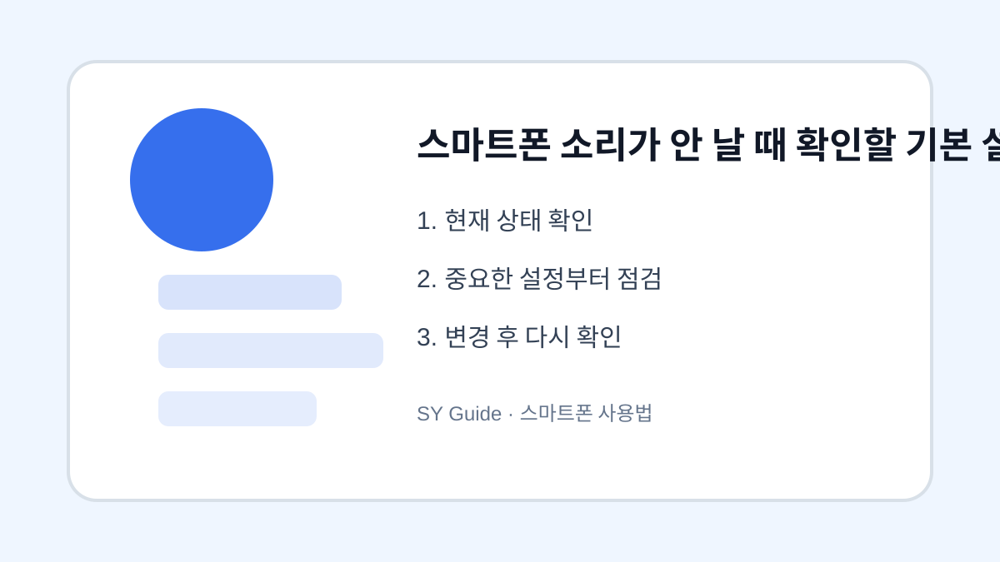

스마트폰 소리가 안 날 때 확인할 기본 설정
무음 모드, 미디어 볼륨, 블루투스 연결, 앱별 알림음을 순서대로 확인합니다.

스마트폰 소리가 갑자기 안 나면 고장이라고 생각하기 쉽지만 대부분은 설정 문제입니다. 전화벨, 알림음, 동영상 소리는 각각 다른 볼륨으로 관리되므로 어느 소리가 안 나는지 먼저 구분해야 합니다.
볼륨 종류 구분
벨소리 볼륨이 켜져 있어도 미디어 볼륨이 0이면 영상 소리가 나지 않습니다. 반대로 미디어 소리는 나는데 전화벨이 안 들리면 무음 모드나 방해금지 모드를 확인해야 합니다.
블루투스 연결 확인
이어폰이나 차량 블루투스에 연결된 상태라면 소리가 스마트폰 스피커가 아니라 다른 기기로 나갈 수 있습니다. 빠른 설정에서 블루투스를 잠시 끄고 다시 확인해보세요.
| 증상 | 확인 항목 | 조치 |
|---|---|---|
| 전화벨 없음 | 무음/방해금지 | 모드 해제 |
| 영상 소리 없음 | 미디어 볼륨 | 볼륨 올리기 |
| 소리 다른 곳 재생 | 블루투스 | 연결 해제 |
설정을 바꾸기 전 마지막 확인
- 무음 모드와 방해금지 모드 확인하기
- 벨소리와 미디어 볼륨을 따로 확인하기
- 블루투스 연결 상태 보기
- 앱별 알림음 설정 확인하기
- 재부팅 후에도 같으면 스피커 점검하기
소리 문제는 대부분 간단한 설정에서 시작됩니다. 수리 전 기본 항목을 차례로 확인해보면 불필요한 걱정을 줄일 수 있습니다.
스마트폰 소리가 안 날 때 실제 상황
전화벨은 안 울리는데 영상 소리는 나는 경우처럼 소리 문제는 원인이 여러 가지입니다. 무음 모드, 방해금지, 블루투스 연결, 앱별 알림 소리를 나눠 확인해야 빠르게 찾을 수 있습니다.
소리 문제 해결 중 흔한 실수
볼륨 버튼만 계속 눌러도 알림 볼륨이 아니라 미디어 볼륨만 바뀔 수 있습니다. 연결된 이어폰이나 차량 블루투스를 해제하고, 알림 종류별 소리를 따로 확인하는 것이 좋습니다.
스마트폰 소리 설정 관련 설정을 먼저 확인해야 하는 이유
스마트폰 소리 설정 관련 설정은 단순히 메뉴 하나를 켜고 끄는 문제가 아니라, 실제 사용 흐름에서 어떤 불편을 줄이려는지 먼저 정해야 합니다. 같은 메뉴라도 기기 제조사, 운영체제 버전, 앱 업데이트 상태에 따라 이름이 달라질 수 있으므로 현재 화면을 기준으로 차근차근 확인하는 것이 좋습니다.
스마트폰 소리 설정에서 자주 생기는 실수
스마트폰 소리가 안 날 때을 정리할 때는 되돌리기 어려운 삭제나 계정 변경을 마지막 단계로 미루는 것이 좋습니다. 먼저 표시, 알림, 권한처럼 쉽게 복구할 수 있는 항목부터 확인하면 실수 부담을 줄일 수 있습니다.
스마트폰 소리 설정 점검 후 다시 볼 부분
스마트폰 소리가 안 날 때은 사용자마다 필요한 범위가 다르기 때문에, 자주 쓰는 앱과 계정부터 적용하는 편이 좋습니다. 바꾸기 전 화면과 바꾼 뒤 결과를 비교하면 어떤 설정이 실제로 도움이 됐는지 판단하기 쉽습니다.